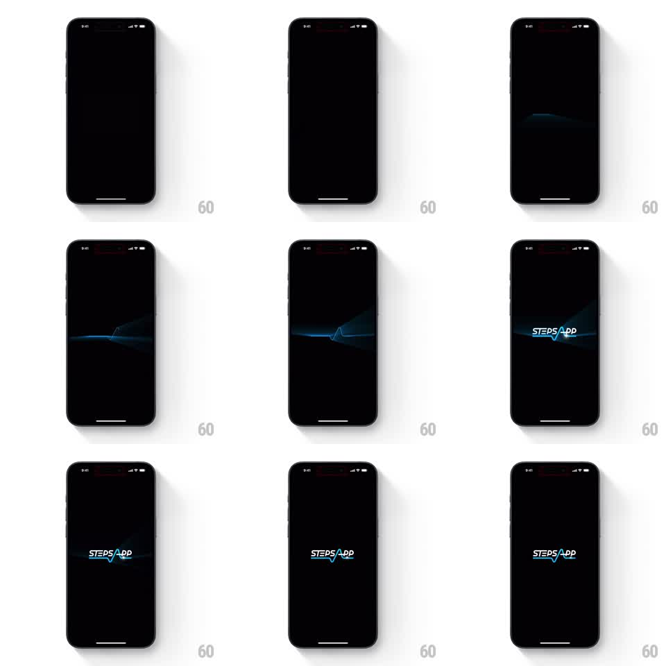

Media
Frame-by-frame

Rebuild this animation 1:1: StepsApp's splash - a glowing heartbeat pulse line sweeps across the dark screen and morphs into the logo's pulse glyph as the wordmark fades in around it.

Rebuild this animation 1:1: StepsApp's splash - a glowing heartbeat pulse line sweeps across the dark screen and morphs into the logo's pulse glyph as the wordmark fades in around it. ## Integration Integration: stack-agnostic spec - springs given as stiffness/damping, timed motions as duration + curve; map every value to your framework and animation library of choice. ## Scene Near-black screen. A thin blue EKG pulse line travels horizontally, its glow blooming around the spikes; the "STEPS APP" wordmark (blue on dark) locks up around the pulse, which becomes the stroke through the wordmark's center. ## Motion spec Pattern: traveling pulse morphing into logo, ~2s. - The pulse line enters from the left edge, traveling right (1.2s, ease-in-out), its spikes glowing with a soft bloom that trails slightly. - At center screen the traveling line decelerates and its central spike aligns with where the logo's pulse glyph sits. - The wordmark fades in around the pulse (400ms), the line's center section becoming the logo's integrated heartbeat stroke while the trailing line fades beyond the letters. - The assembled logo holds with the pulse glyph beating softly (glow swell every 1s, twice), then the splash fades to the app. ## Calibration - The travel-to-logo alignment must be exact - the pulse becomes the wordmark's own stroke, any offset reads as two elements. - The glow is blue and soft; hard white reads as a different brand. ## Reduced motion Logo fades in assembled. ## Don't miss - The pulse spikes are irregular like a real EKG - a sine wave reads as audio, not heart. - The wordmark letters never move; only their opacity and the line's travel carry the animation.